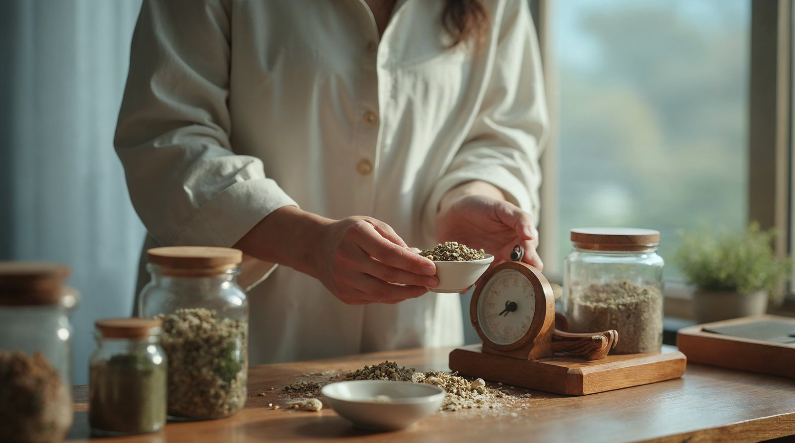
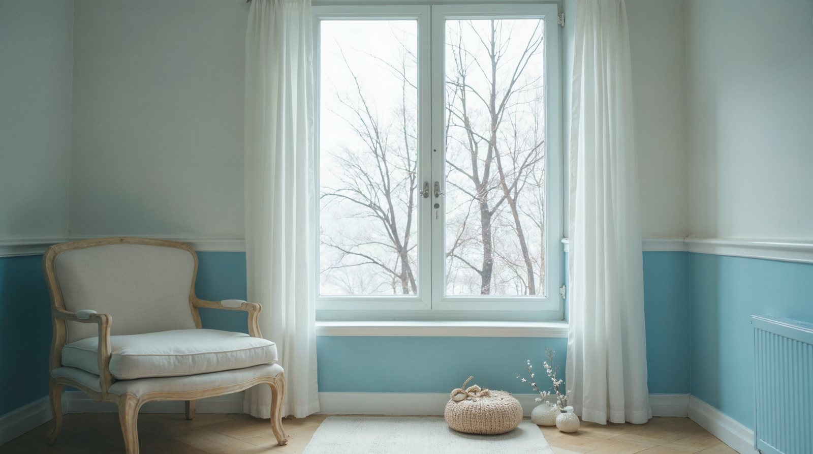

이종호 한의사 감수좋은꿈참사랑한의원 대표원장 (한의사 면허번호 19769)발행 2026-11-25 · 수정 2026-11-26
이 글의 차례
- 왜 큰 시험 뒤에 허탈하고 불안할 수 있나요
- 허탈함과 우울은 어떻게 나눠 볼까요
- 몸에서는 이런 신호로 나타나기도 합니다
- 먼저 이렇게 여쭙니다
- 일상에서 먼저 해 볼 수 있는 것
- 휴대폰과 커뮤니티는 어떻게 거리를 둘까요
- 잠이 흔들릴 때는 어떻게 할까요
- 몸을 먼저 돌보는 작은 방법들
- 다음 시험을 다시 준비해야 한다면
- 상황별 예시
- 스스로 점검해 보세요
- 결과를 기다리는 동안 하루는 어떻게 채울까요
- 가족과 친구는 어떻게 곁에 있어 주면 좋을까요
- 마음이 힘들다는 말을 꺼내기 어렵다면
- 얼마나 지켜보고 언제 상담할까요
- 한의원에서 함께 살필 수 있는 경우
- 이렇게 기록해 오시면 상담이 쉬워집니다
- 이런 증상은 먼저 확인이 필요합니다
- 함께 읽으면 좋은 글
시험이 끝났는데 후련하기보다 허탈하고 불안하다면, 그 마음이 이상한 것이 아니라는 점부터 알아 두시면 좋습니다. 몇 달, 몇 년을 한 날짜만 보고 달려오다 그 날짜가 지나가면 하루의 기준이 사라진 듯 느껴질 수 있습니다. 노량진에서 임용이나 공무원 시험을 치른 분들도 결과를 기다리는 동안 같은 이야기를 합니다.
시험을 잘 봤다고 느끼는 분도, 아쉬움이 큰 분도 이런 마음을 겪습니다. 결과와 상관없이 오랫동안 한쪽으로만 당겨져 있던 마음이 갑자기 풀리면서 생기는 반응이라, 며칠에서 몇 주에 걸쳐 조금씩 옅어지는 경우가 많습니다.
다만 그 기간에 잠과 식사가 무너지면 마음도 쉽게 다시 일어서지 못합니다. 그래서 저는 마음을 억지로 끌어올리기보다 먼저 몸의 하루를 붙잡는 일부터 함께 해 보자고 말씀드립니다.
왜 큰 시험 뒤에 허탈하고 불안할 수 있나요
몇 달 동안 몸은 시험 날짜에 맞춰 긴장한 채로 버텨 왔습니다. 우리 몸에는 긴장할 때 앞으로 나서는 쪽과 쉴 때 몸을 가라앉히는 쪽이 번갈아 일하는데, 바쁜 시기가 길어지면 긴장 쪽이 오래 켜진 채로 남기 쉽습니다.
그러다 시험이 끝나 힘이 한꺼번에 풀리면, 그동안 미뤄 두었던 피로가 몰려와 몸이 무겁고 마음이 가라앉은 듯 느껴질 수 있습니다. 바쁠 때는 괜찮다가 쉬는 날 오히려 더 처지는 것도 비슷한 흐름입니다.
하루를 채우던 공부 일정이 사라진 것도 큽니다. 몇 시에 일어나 무엇을 할지 정해 주던 틀이 없어지면 '이제 뭘 해야 하지'라는 막막함이 불안으로 번지기도 합니다.
결과를 기다리는 동안에는 같은 걱정이 되풀이되고, 친구들의 채점 결과와 진로 이야기를 들으며 자꾸 스스로를 비교하게 됩니다. 여기에 잠과 식사 시간까지 흐트러지면 기분도 함께 흔들립니다.
허탈함과 우울은 어떻게 나눠 볼까요
시험 뒤의 허탈함은 대개 '무언가 빠져나간 듯한' 느낌에 가깝습니다. 하루가 비어 보이고 의욕이 덜하지만, 친구를 만나거나 좋아하는 음식을 먹을 때는 잠깐이라도 즐거움을 느낄 수 있습니다.
반면 좋아하던 일에도 흥미가 거의 없고, 거의 매일 하루 대부분이 가라앉아 있으며, 이런 날이 두 주 넘게 이어진다면 단순한 허탈함으로만 보지 않고 살펴볼 필요가 있습니다. 잠이 지나치게 늘거나 줄고, 입맛이 크게 달라지는 것도 함께 봅니다.
이 구분은 스스로 판단하기 어려운 경우가 많습니다. 하루 한 줄씩 기분을 적어 두면 나아지는 흐름인지, 그대로이거나 깊어지는 흐름인지 본인도 가족도 알아보기 쉬워집니다. 점수 대신 날씨를 적듯 '맑음, 흐림, 비'로 짧게 남겨도 충분합니다.
몸에서는 이런 신호로 나타나기도 합니다
마음의 긴장은 몸으로 먼저 드러나는 경우가 많습니다. 시험이 끝난 뒤 이유 없이 가슴이 답답하거나 두근거리고, 명치가 막힌 듯 밥이 잘 넘어가지 않는다는 분이 있습니다.
어깨와 목이 늘 굳어 있거나, 잠들기 전 숨이 얕아지는 느낌, 아침마다 머리가 무거운 것도 흔한 신호입니다. 이런 몸의 변화를 함께 이야기해 주시면 마음의 상태를 살피는 데 도움이 됩니다.
먼저 이렇게 여쭙니다
- 허탈함이나 불안이 하루 중 언제 가장 큰가요?
- 잠과 식사는 시험 전과 비교해 어떻게 달라졌나요?
- 요즘 하루를 주로 무엇을 하며 보내나요?
- 가슴 두근거림이나 답답함, 소화 불편이 함께 있나요?
- 이야기를 나눌 사람이 가까이에 있나요?
- 결과 발표나 면접처럼 앞으로 정해진 일정이 있나요?
- 커피나 에너지 음료를 하루 얼마나 마시나요?
일상에서 먼저 해 볼 수 있는 것
- 일어나는 시각과 첫 끼 시각 두 가지만 먼저 정하기
- 하루에 한 번 밖에 나가 20분 걷기
- 결과 걱정은 하루 한 번 종이에 적고 그 시간 외에는 미뤄 두기
- 채점과 커뮤니티 확인 시간을 정해 두고 그 밖에는 닫아 두기
- 미뤄 둔 작은 일 하나(방 정리, 친구 만나기)를 하루에 하나씩 하기
휴대폰과 커뮤니티는 어떻게 거리를 둘까요
시험이 끝나면 채점 결과, 예상 등급, 합격선 이야기가 하루 종일 휴대폰으로 쏟아집니다. 정보를 찾는다고 들어갔다가 남의 점수와 내 점수를 비교하며 몇 시간씩 보내고 나면 마음이 더 가라앉는 일이 흔합니다.
확인하는 시간을 하루 두 번, 예를 들어 점심 뒤와 저녁 식사 뒤 30분씩으로 정해 두고 그 밖의 시간에는 앱 알림을 꺼 두세요. 잠자리에 들 때는 휴대폰을 거실에 두고 들어가는 것도 방법입니다.
진로 정보는 학교 선생님이나 믿을 만한 안내 자료처럼 출처가 분명한 곳 한두 군데로 좁히면 쓸데없는 불안을 덜 수 있습니다.
잠이 흔들릴 때는 어떻게 할까요
마음이 불안하면 잠드는 데 오래 걸리거나 새벽에 자주 깨기 쉽습니다. 잠이 흔들리면 다음 날 기분도 더 가라앉아, 잠과 기분이 서로를 끌어내리는 고리가 생깁니다.
잠드는 시각을 억지로 맞추려 하기보다 일어나는 시각을 먼저 정하고, 낮에 햇빛을 보며 걷는 시간을 만들어 보세요. 누워서 걱정이 꼬리를 물면 잠시 일어나 어둑한 곳에서 따뜻한 물을 마시고, 졸음이 올 때 다시 눕습니다.
잠이 잘 오지 않는다는 분께 저는 약을 생각하기 전에 생활 리듬부터 권합니다. 끼니를 날마다 비슷한 시간에 들고, 저녁에는 옆 사람과 이야기를 나눌 수 있을 만큼의 속도로 20~30분 걸어 보세요. 몸이 하루의 흐름을 기억하도록 돕는 방법입니다. 잠 리듬을 되돌리는 방법은 아래 함께 읽으면 좋은 글에 더 자세히 적어 두었습니다.
몸을 먼저 돌보는 작은 방법들
마음이 무거울 때는 마음에 대한 말보다 몸을 편하게 하는 일이 먼저 들어올 때가 많습니다. 아래 가운데 하나만 골라 오늘 해 보셔도 충분합니다.
- 가슴이 답답할 때는 의자에 등을 기대고 내쉬는 숨을 들이쉬는 숨보다 조금 길게, 열 번쯤 천천히 쉬어 보기(어지러우면 바로 멈추기)
- 아침에 일어나면 따뜻한 물 한 잔을 마시고 창문을 열어 바깥 공기를 들이기
- 밥맛이 없을 때는 죽이나 국에 밥을 말아 몇 숟가락이라도 제때 먹기
- 어깨와 목이 굳었다면 잠들기 한두 시간 전 따뜻한 물에 몸을 담그거나, 샤워하며 목 뒤에 물을 오래 맞기
- 잠들기 전에는 손발을 따뜻하게 하고 방 불을 일찍 낮추기
이런 일들이 마음을 한 번에 바꾸지는 않습니다. 그래도 한 가지를 해낸 날은 달력에 작은 표시를 해 두세요. 그 표시가 쌓이는 것을 보는 것만으로도 하루를 버틴 자신을 알아보는 데 도움이 됩니다.
저는 큰 목표를 잘 드리지 않고, 해낼 수 있는 만큼을 함께 정합니다. 사람은 생각보다 쉽게 낙담합니다. 못 지킨 날이 있어도 스스로를 탓하지 말고 다음 날 다시 하시면 됩니다.
다음 시험을 다시 준비해야 한다면
결과에 따라 다음 해를 다시 준비해야 하는 분도 있습니다. 이때 쉬는 시간 없이 곧바로 책상 앞에 앉으면 지친 몸과 마음이 따라오지 못해 오히려 오래 헤매기 쉽습니다.
건강을 지키는 순서를 여쭤보시면 저는 먼저 잘 쉬고, 아픈 것은 미루지 않고 치료하고, 그다음에 움직이자고 답합니다. 다시 공부를 시작하는 분께도 같은 순서를 권합니다. 지친 몸에 긴 계획을 억지로 얹으면 오래가지 못하기 때문입니다.
다시 시작하기 전에 일주일 정도는 잠과 식사, 운동의 틀부터 세우는 기간으로 두시길 권합니다. 공부 시간은 처음부터 길게 잡지 말고 하루 몇 시간으로 시작해 늘려 가세요.
지난 준비 기간에 몸이 어디가 가장 힘들었는지 돌아보며 이번에는 무엇을 바꿀지 정리해 보셔도 좋습니다. 잠을 줄여 가며 버틴 시간이 길었다면, 이번에는 잠자는 시간부터 계획표에 먼저 적어 넣는 것도 방법입니다.
상황별 예시
예를 들어 수능을 마친 고3 수험생이 채점 뒤 방에서 거의 나오지 않고 밤새 커뮤니티만 보는 경우가 있습니다. 이럴 때는 아침 식사 시각 하나만 가족과 함께 정해 지켜 보는 것부터 시작해 볼 수 있습니다.
예를 들어 몇 년째 공무원 시험을 준비하다 시험을 치른 분이 발표를 기다리며 하루를 통째로 비워 둔 경우라면, 결과와 상관없이 할 수 있는 운동이나 짧은 아르바이트처럼 하루의 틀이 되는 일을 하나 정해 보시길 권합니다.
자녀의 수험 기간을 함께 버텨 온 부모가 시험 뒤 오히려 기운이 빠지고 잠이 얕아지는 경우도 있습니다. 보호자 자신의 잠과 식사도 함께 챙겨야 할 때입니다.
스스로 점검해 보세요
시험이 끝나고 한두 주가 지났을 때 아래 가운데 몇 개가 해당하는지 표시해 보세요. 진단을 위한 것이 아니라, 지금 하루가 어디서 흔들리는지 살펴보는 출발점입니다.
- 일어나는 시각이 날마다 두세 시간씩 달라진다
- 하루 한 끼 이상 거르는 날이 이어진다
- 사흘 넘게 집 밖에 한 번도 나가지 않았다
- 친구를 만나거나 좋아하는 것을 먹어도 즐거운 순간이 잘 떠오르지 않는다
- 가슴 답답함이나 두근거림, 명치가 막힌 느낌이 자주 든다
- 채점 결과와 커뮤니티를 보느라 하루 몇 시간씩 쓴다
결과를 기다리는 동안 하루는 어떻게 채울까요
결과가 나오기 전까지는 무엇을 해도 마음이 놓이지 않습니다. 그럴수록 하루를 크게 계획하기보다 아주 작은 틀 몇 개만 세워 두시길 권합니다.
생활이 크게 바뀌는 시기에는 몸을 움직일 거리와 사람을 만날 일을 미리 만들어 두시라고 말씀드리곤 합니다. 오전에는 몸을 쓰는 일을, 오후에는 사람을 만나는 일을 하나씩 넣어 보세요.
걷기, 줄넘기, 방 정리처럼 손과 발을 움직이는 일은 머릿속의 걱정을 잠깐 내려놓는 데 도움이 될 때가 많습니다. 혼자 나가기 어렵다면 가족에게 동네 한 바퀴만 같이 걷자고 부탁해 보세요. 혼자 하면 마음이 가라앉기 쉬운 일도 누군가와 함께하면 오래 이어 가기 쉽습니다.
가족과 친구는 어떻게 곁에 있어 주면 좋을까요
곁에서 보는 가족은 무엇이라도 해 주고 싶어 조언이 많아지기 쉽습니다. 하지만 이 시기에는 결과나 앞으로의 계획을 자꾸 묻기보다, 함께 밥을 먹고 산책을 나가는 것처럼 같이 있는 시간을 늘리는 편이 마음을 덜 무겁게 합니다.
'괜찮아'라는 말보다 '많이 지쳤겠다'처럼 지금 마음을 그대로 받아 주는 말이 더 와닿을 때가 많습니다. 친구라면 결과 이야기 없이 함께 영화를 보거나 맛있는 것을 먹으러 가자고 먼저 연락해 주는 것만으로도 큰 힘이 됩니다. 답장이 늦거나 짧더라도 서운해하지 말고, 며칠 뒤 다시 한번 안부를 물어 주세요.
마음이 힘들다는 말을 꺼내기 어렵다면
오래 기대를 받아 온 수험생일수록 가족에게 힘들다는 말을 꺼내기 어려워합니다. 실망시킬까 봐, 걱정을 끼칠까 봐 괜찮은 척하다 보면 마음은 더 무거워집니다.
그럴 때는 감정 대신 몸의 변화부터 말해 보세요. '요즘 잠이 잘 안 와', '밥이 잘 안 넘어가'처럼 몸의 이야기는 꺼내기가 한결 쉽고, 듣는 사람도 무엇을 도와야 할지 알기 쉽습니다. 말로 하기 어렵다면 짧은 메시지로 남겨도 괜찮습니다.
학교 상담 선생님이나 가까운 정신건강복지센터처럼 이야기를 들어 주는 곳도 있습니다. 혼자 견디는 것보다 누군가에게 한 번 털어놓는 것만으로도 숨이 조금 트이는 분이 많습니다.
얼마나 지켜보고 언제 상담할까요
하루의 틀을 세우며 한두 주 사이에 잠과 식사가 돌아오고 기분도 조금씩 가벼워진다면, 지금처럼 지내며 지켜보셔도 됩니다.
두 주가 지나도 잠과 식사가 제자리를 찾지 못하거나 가슴 답답함과 두근거림이 이어진다면, 혼자 버티기보다 상담을 받아 보시길 권합니다.

한의원에서 함께 살필 수 있는 경우
- 허탈함과 함께 잠이 얕아지고 입맛이 줄어든 경우 잠과 소화, 긴장을 함께 살핍니다.
- 가슴 두근거림과 답답함이 자주 있는 경우 몸의 긴장 신호를 함께 살핍니다.
- 다음 시험 준비를 시작해야 하는데 몸이 따라오지 않는 경우 하루 리듬부터 함께 정리합니다.
좋은꿈참사랑한의원에서는 모든 분께 맥부터 짚으며 시험 뒤 하루를 어떻게 보내는지, 잠과 식사가 어떻게 달라졌는지, 가슴 답답함이나 소화 불편이 언제 심한지를 차례로 여쭙고, 필요하다고 판단될 때 설진·복진을 더해 살핀 뒤, 상태에 맞춰 침이나 한약 상담 등을 정합니다. 귀가 전에는 집에서 지켜볼 점과 다음에 확인할 일을 알려 드립니다.
정신건강의학과 진료를 받고 계시다면 그 진료를 우선으로 두고 함께 살피며, 처방받은 약은 처방한 의사와 상의 없이 줄이거나 끊지 않으셨으면 합니다.

이렇게 기록해 오시면 상담이 쉬워집니다
- 기분이 가장 가라앉는 시간대와 그때 하던 일
- 잠든 시각과 일어난 시각, 끼니 횟수
- 두근거림이나 답답함이 있었던 날
- 복용 중인 약과 받고 있는 상담·진료
- 하루 중 조금이라도 마음이 편했던 순간과 그때 하던 일
- 휴대폰과 커뮤니티를 본 시간
긴 시간을 한 날짜만 보고 버텨 온 것만으로도 충분히 애쓰셨습니다. 다음에 오시면 요즘 몇 시에 일어나 첫 끼를 언제 드시는지부터 여쭙겠습니다.
이런 증상은 먼저 확인이 필요합니다
- 두 주 넘게 거의 매일 가라앉아 아무것도 할 수 없거나, 가슴이 쥐어짜듯 아프고 숨이 찬 경우
- 스스로를 해칠 생각이 들면 ☎ 109로 바로 연락하세요.
이런 신호가 있으면 한의원보다 가까운 병원이나 응급실을 먼저 찾으세요.
함께 읽으면 좋은 글

여쭙는 것
- 허탈함이나 불안이 하루 중 언제 가장 큰가요?
- 잠과 식사는 시험 전과 비교해 어떻게 달라졌나요?
- 요즘 하루를 주로 무엇을 하며 보내나요?
생활에서 해 볼 것
- 일어나는 시각과 첫 끼 시각 두 가지만 먼저 정하기
- 하루에 한 번 밖에 나가 20분 걷기
- 결과 걱정은 하루 한 번 종이에 적고 그 시간 외에는 미뤄 두기
한의원에서 함께 살필 것
- 허탈함과 함께 잠이 얕아지고 입맛이 줄어든 경우 잠과 소화, 긴장을 함께 살핍니다.
- 가슴 두근거림과 답답함이 자주 있는 경우 몸의 긴장 신호를 함께 살핍니다.
- 다음 시험 준비를 시작해야 하는데 몸이 따라오지 않는 경우 하루 리듬부터 함께 정리…
먼저 확인이 필요한 신호
- 두 주 넘게 거의 매일 가라앉아 아무것도 할 수 없거나, 가슴이 쥐어짜듯 아프고 숨…
- 스스로를 해칠 생각이 들면 109로 바로 연락하세요.
한눈에 보는 표
| 구분 | 핵심 |
|---|---|
| 여쭙는 것 | 허탈함이나 불안이 하루 중 언제 가장 큰가요? 잠과 식사는 시험 전과 비교해 어떻게 달라졌나요? |
| 생활에서 해 볼 것 | 일어나는 시각과 첫 끼 시각 두 가지만 먼저 정하기 하루에 한 번 밖에 나가 20분 걷기 |
| 한의원에서 함께 살필 것 | 허탈함과 함께 잠이 얕아지고 입맛이 줄어든 경우 잠과 소화, 긴장을 함께 살핍니다. 가슴 두근거림과 답답함이 자주 있는 경우 몸의 긴장 신호를 함께 살핍니다. |
| 먼저 확인이 필요한 신호 | 두 주 넘게 거의 매일 가라앉아 아무것도 할 수 없거나, 가슴이 쥐어짜듯 아프고 숨이 찬 경우 스스로를 해칠 생각이 들면 109로 바로 연락하세요. |
자주 묻는 질문
이런 기분은 얼마나 가나요?
사람마다 다르지만 일과가 다시 잡히면서 며칠에서 몇 주 사이에 조금씩 옅어지는 분이 많습니다. 두 주가 지나도 잠과 식사가 돌아오지 않으면 상담을 권합니다.
부모님께 말하기가 어려워요.
‘잠이 잘 안 온다’, ‘밥맛이 없다’처럼 몸의 변화부터 이야기해 보는 것도 방법입니다. 진료실에서는 편한 만큼만 말씀하셔도 됩니다.
한의원에서는 무엇을 하나요?
맥을 짚으며 이야기를 충분히 듣고, 잠과 소화, 긴장 상태를 함께 살핍니다. 필요하면 다른 진료를 함께 받으시도록 안내합니다.
좋은꿈참사랑한의원은 재진 때 지난번 이야기부터 이어서 여쭙니다. 진료시간과 예약은 오시는 길에서 확인하세요.
어디서 상담받을 수 있나요?
좋은꿈참사랑한의원은 서울 동작구 만양로2길 2 신성빌딩 3층·5층(서울 동작구 상도동, 7호선 상도역 3번 출구 근처)에 있습니다. 한의사 3명(이종호 대표원장, 조영기 수석진료원장, 정원영 진료원장)이 진료합니다. 진료시간은 평일 09:30~20:00(점심 13:00~14:00), 토·일·공휴일 09:30~15:00이며, 방문 전 전화로 확인을 권합니다. 예약은 네이버 예약, 카카오톡 상담, 전화 02-815-7510로 받습니다.
이 글은 일반적인 건강 정보이며 개인의 진단이나 치료를 대신하지 않습니다. 증상이 있거나 복용 중인 약이 있다면 진료를 통해 확인하세요. 치료 효과는 개인마다 다를 수 있습니다.
작성 기준: 일반적으로 알려져 있는 건강 정보를 참고해 정리했습니다(대표원장 감수). 증상 기록은 1~2주 동안 하루 1회, 비슷한 시간에 적어 오시면 지난 상태와 비교하기 쉽습니다.